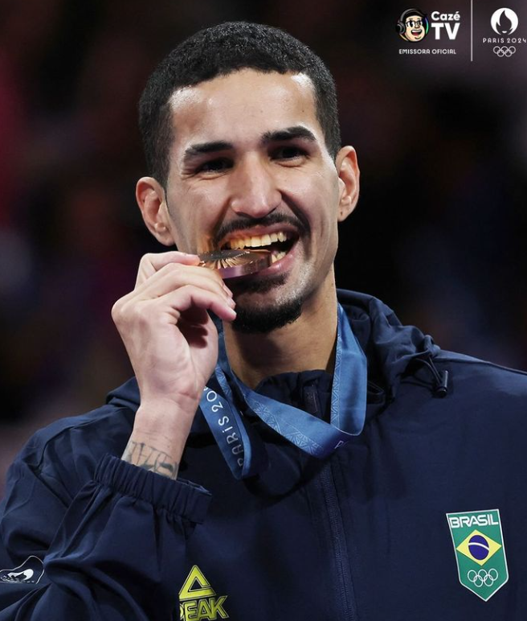

Edival Marques Quirino Pontes, também conhecido Netinho (João Pessoa, 11 de outubro de 1997) é um lutador de taekwondo brasileiro. Foi vice-campeão mundial no Campeonato Mundial de Taekwondo de 2022 em Guadalajara, campeão nos Jogos Olímpicos da Juventude de 2014, e medalhista olímpico com um bronze nos Jogos Olímpicos de Verão de 2024.
Filho de um jogador de futebol amador, entrou aos cinco anos numa escola desse esporte, e após conhecer o taekwondo dois anos depois Edival trocaria pela luta coreana. Aos 12 anos, já ganhava campeonatos brasileiros.
Nas Olimpíadas de 2024, Pontes perdeu sua primeira partida para Zaid Kareem, mas entrou na repescagem quando Kareem chegou à final.
Após vencer uma revanche contra Hakan Recber, ele chegou à disputa pela medalha de bronze contra Javier Pérez Polo, e com sua vitória se tornou o terceiro brasileiro com uma medalha olímpica no taekwondo depois de Natália Falavigna e Maicon Andrade.